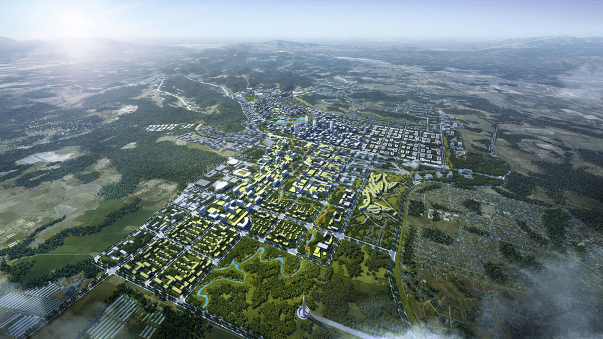
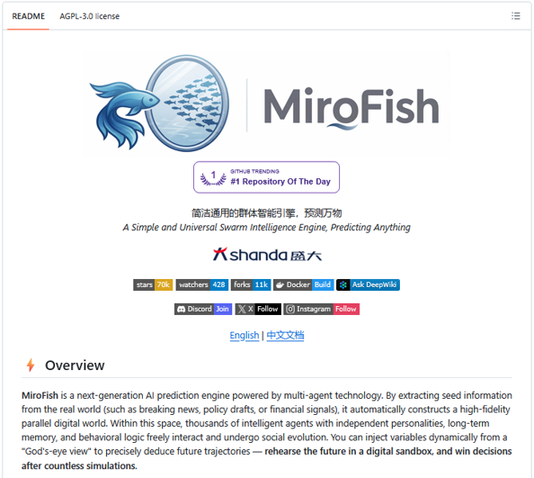
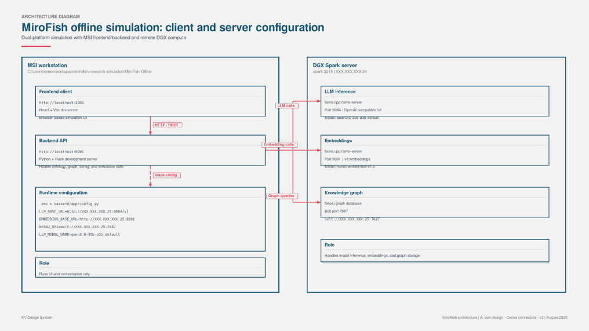
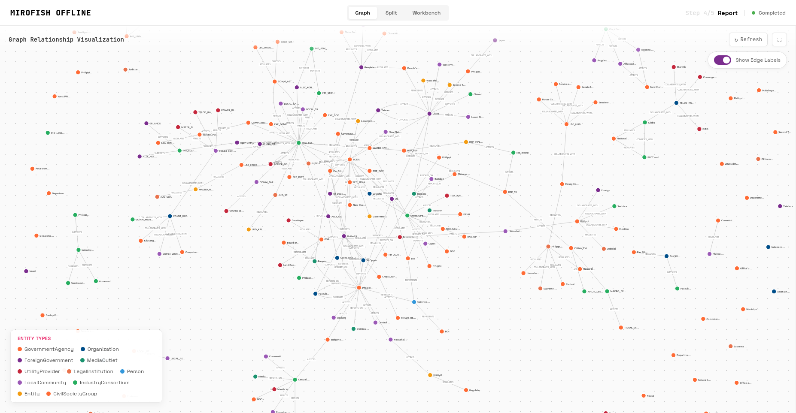

The Philippines under Pax Silica: a 10-year simulation
What a swarm simulation revealed about a deal we don’t have yet
Disclosure: I use AI as a writing partner to refine my prose and structure, but the ideas, analysis, and first drafts originate entirely with me.

Image credit: The Philippines is building a green, disaster-resilient city (2018), CNN.
On April 16, 2026, Washington and Manila announced plans for a 4,000-acre Economic Security Zone in the Luzon Economic Corridor. The first AI-native industrial acceleration hub under the U.S.-led Pax Silica Initiative. The Philippines became the coalition’s thirteenth signatory, with New Clark City in Tarlac as the likely site and the BCDA looking into land availability.
Here’s the part that matters: there’s no project yet. No signed lease, no disclosed CAPEX, no named anchor tenants, no construction timeline, and no resolved utility plan. Philippine Defense Secretary Gilberto Teodoro Jr. confirmed it publicly: no firm documents. What exists is a framework: a U.S. strategy to spread semiconductor, critical-minerals, and advanced-manufacturing capacity across trusted partner economies instead of reshoring everything into one, paired with a Philippine play to position the country as a regional digital hub.
And because there is no concrete build, we still get to ask the hard questions.
Over the weekend (after some coffee and a few hours of staring at node graphs), I ran a forty-round quarterly simulation of this framework through MiroFish, an agent-based simulation engine. Q3 2026 through Q2 2036. Ten years compressed into an afternoon, with 239 nodes representing the key actors and assets, 353 relationships between them, and 17 domain hubs spanning energy, water, policy, logistics, and geopolitics, all running under tight rules and real constraints, and I didn’t rig a single input.
The output wasn’t what the hype machine wants you to believe (and I’m not the only one who ran into this).
You can audit all of it. The seed document, simulation prompt, and agent manifest are all linked at the end.
How the simulation works
MiroFish models swarm intelligence, which is what happens when a flock of birds turns together without a leader, or a colony of ants moves something none of them could carry alone. Simple rules applied by many agents produce complex, emergent behavior.
That’s exactly what you need to test a policy framework against reality. Not a static spreadsheet where everything balances by assumption, but a living system where thousands of decisions by regulators, contractors, households, foreign governments, and markets interact over time.

Figure 1 MiroFish GitHub repo: https://github.com/666ghj/MiroFish.
The video below is a good primer on how swarm intelligence and emergent behavior work in simulations like this.

Figure 2 Offline simulation setup.
The engine creates role-based agents that share a knowledge and relationship graph. Each follows its own incentives and constraints. You introduce shocks: a drought hits, a tariff changes, tensions flare in the South China Sea. Agents react. The system evolves. Every state change is logged in a continuous ledger, so you can trace how a decision in quarter one ripples through to year ten.
It stress-tests a framework against reality, not a pitch deck. The reconstructed knowledge graph and standalone simulation report are linked directly.
{kind=link}

Figure 3 Actual agent interaction knowledge graph. This is animated when you run the actual simulation, I swear.
The verdict: conditionally beneficial
The high-level result is conditionally beneficial. It can work, sure. But only under narrow conditions.
The simulation showed real macroeconomic gains: GDP growth, job creation, foreign direct investment. These aren’t phantom numbers. But they came at a real, localized cost, and the framework survives only if we accept strict renegotiation terms and synchronized supporting infrastructure. Without those, it collapses.
Here is the part that surprised me.
Water, not electricity, is the binding constraint. Data centers are thirsty. The current water allocation in the target regions cannot absorb the load without displacing existing users. And the costs socialize upward into household utility bills. The families benefiting least from the digital hub end up paying the most for its water and power.
Indigenous rights and land displacement were major friction points. The local community and watchdog agents didn’t accept land acquisition. They contested it, delayed permits, triggered legal reviews that stalled construction. This isn’t a glitch in the simulation. It reflects the law and social realities on the ground. Ignoring it in the planning phase is a recipe for failure.
The framework is also exposed geopolitically. I tested external shocks: tensions in the South China Sea, coercion scenarios involving Taiwan, Middle East energy shocks, potential U.S. tariffs. Because Pax Silica relies on global supply chains and foreign investment, it is highly sensitive to disruption. A major shock could cut off critical hardware or deter investors entirely. It’s a primary risk, not background noise.
Three gates that failed
Three specific gates effectively failed in the simulation.
First, social license and Indigenous rights. The current framework does not provide an early-stage mechanism for consent and benefit-sharing. Local communities are treated as obstacles to clear, not partners to engage.
Second, water resource stress. There is no viable plan to secure the necessary water without harming local agriculture or communities. The simulation showed this repeatedly, across different scenarios.
Third, household utility affordability. The cost structure pushes bills up for regular families and creates political backlash that threatens the project’s longevity.
What would actually fix this
Fixing this requires concrete redesign, not better press releases.
Water security must be a primary design constraint, not an afterthought. National, provincial, and local government units need a transparent, legally binding process for Indigenous and local community engagement, built into the framework from day one. Household utilities must be insulated from the cost pressures of industrial-scale data center operations, whether through targeted subsidies or separate billing structures.
Pax Silica is not an automatic win. The economic benefits are tangible but extremely fragile.
As someone who just finished an MBA capstone on conditionality, I know the importance of disciplined investment under uncertainty. Especially in high-value, high-risk, high-return situations. This project works only if strict conditions on governance, environment, and social impact are met.
Households are the ultimate check. If the average Filipino family is worse off because of this project, it has failed. Regardless of what the GDP statistics say.
Water’s the binding constraint. We cannot build a digital hub on a dry foundation. And regional instability can, and will, impact the project’s viability. Geopolitics isn’t background noise.
Final takeaway
The risk-taker in me says this: proceed with Pax Silica only under strict renegotiation of terms, full transparency on costs and risks, and synchronized development of the water, power, and community safeguards that the current framework assumes away.
If we’re not willing to do that, we should slow down. Fix the design. Or walk away.
Seed and output artifacts
- Seed document
- Simulation prompt
- Agent manifest
- Knowledge graph reconstructed from Neo4j
- Standalone simulation report
Sources
- BCDA letter to US Dept of State re Pax Silica proposal (9 Apr 2026) + diplomatic transmittal (16 Apr 2026)
- US conditional acceptance letter (16 Apr 2026)
- Signed Pax Silica declaration (PH-US, 16 Apr 2026, names redacted)
- PH-US AI Opportunity Joint Statement signing declaration (25 Jun 2026)
- US State Department: pax-silica page, state.gov
- US Embassy Philippines press note (16 Apr 2026), ph.usembassy.gov
- BOI webpage on Pax Silica and AI Native Industrial Acceleration Hub, boi.gov.ph
- Rappler feature: “Things to know: Pax Silica Philippines – goals, concerns”, rappler.com
- Rappler opinion: “Opinion: Pax Silica – will Philippines build future or for others?”, rappler.com
- Inquirer analysis: “Pax Silica brings promise but at what cost”, newsinfo.inquirer.net
- Reuters (20 Jul 2026): Second Thomas Shoal encounter, reuters.com
- BusinessWorld/Inquirer (27 Jul 2026): DTI on US tariff exemptions, business.inquirer.net
- IMF April 2026 World Economic Outlook (PHL profile), imf.org
- World Bank API: GNI per capita for Philippines, api.worldbank.org
- BSP/market references: USD/PHP spot via Yahoo Finance (61.24 on 1 Aug 2026), finance.yahoo.com
- IEA: “The Middle East and global energy markets”, iea.org
- Brent futures via Yahoo Finance (~USD 90.12/bbl on 31 Jul 2026), finance.yahoo.com
- Meralco (May 2026): residential rate PHP 14.3345/kWh, company.meralco.com.ph
- Manila Water (2026 Standard Rates Tariff Table), mediafiles.manilawater.com
- RA 7227 (Bases Conversion and Development Act of 1992) via Lawphil, lawphil.net